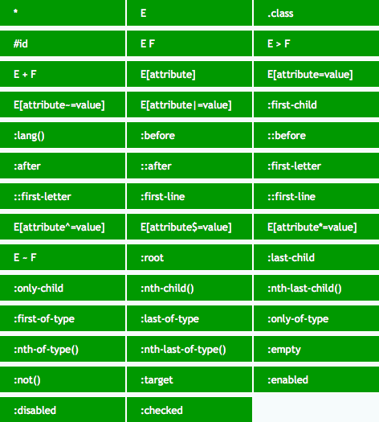

CSS 3 Basic Notes
- CSS 3 Basic Notes
- Cascading and Inheritance
- Property Value
- Best Practice
- 属性排序
- 命名规范
- CSS Selector
- HTML Body Property
- Box Style
- Box Model
- Block Formatting Context
- Stack Context
- Float Patterns
- Position Patterns
- Flex Patterns
- Grid Patterns
- Column Patterns
- Centering Patterns
- List Style
- Alignment
- Opacity
- Border
- CSS Colors
- CSS Background
- CSS Text
- CSS Font
- CSS Couter
- CSS Filter
- Object Position/Fit
- Animation
- Responsive Desgin
- Accessibility
- 常用组件 (Awesome Demo)
- CSS Variables
- SVG
1. Cascading and Inheritance
1.1. Cascading Order
- user agent normal
- user normal
- author normal
- CSS Animations
- author !important
- user !important
- user agent !important
1.2. Specificity
Specificity (Selector Priority)
has 4 bits - thousands, hundreds, tens, ones 0000:
- thousands: inline-style
- hundreds: ID selector
- tens: class selector, attribute selector, pseudo-class(:)
- ones: element selector, pseudo-element(::)
Universal selector (*), combinators (+, >, ~, ' ') negation pseudo-class (:not) have no effect on specificity, but selectors in it have effect on specificity
h1 {
specificity: 0001;
}
#id {
specificity: 0100;
}
h1 + p::first-letter {
specificity: 0003;
}
li > a[href*='en-US'] > .inline-warning {
specificity: 0022;
}
/* <h1 style="color: black">Hello</h1> */
inline-style {
specificity: 1000;
}
/* specificity: 0101 */
#outer a {
background-color: red;
}
/* specificity: 0201 */
/* win */
#outer #inner a {
background-color: blue;
}
/* specificity: 0104 */
#outer div ul li a {
color: yellow;
}
/* specificity: 0113 */
/* win */
#outer div ul .nav a {
color: white;
}
/* specificity: 0024 */
div div li:nth-child(2) a:hover {
border: 10px solid black;
}
/* specificity: 0023 */
div li:nth-child(2) a:hover {
border: 10px dashed black;
}
/* specificity: 0033 */
/* win */
div div .nav:nth-child(2) a:hover {
border: 10px double black;
}
Styles for a directly targeted element will always take precedence over inherited styles, regardless of the specificity of the inherited rule
#parent {
color: green;
}
/* <h1> element will be purple */
h1 {
color: purple;
}
2. Property Value
2.1. Initial Value
The initial value of a CSS property is its default value, as listed in its definition table
2.2. Specified Value
The specified value of a CSS property is the value it receives from the document's style sheet
2.3. Computed Value
The computed value of a CSS property is the value that is transferred from parent to child during inheritance. It is calculated from the specified value by:
- Handling the special values
inherit,initial,unset, andrevert - Doing the computation needed to reach the value described in the "Computed value" line in the property's definition table
2.4. Used Value
The used value of a CSS property is its value after all calculations have been performed on the computed value:
- The used values of dimensions (e.g., width, line-height) are in pixels
- The used values of shorthand properties (e.g., background) are consistent with those of their component properties (e.g., background-color or background-size) and with position and float
2.5. Actual Value
The actual value of a CSS property is the used value of that property after any necessary approximations have been applied
The user agent performs four steps to calculate a property's actual (final) value:
- the specified value is determined based on the result of cascading, inheritance, or using the initial value.
- the computed value is calculated according to the specification (for example, a span with position: absolute will have its computed display changed to block)
- layout is calculated, resulting in the used value
- the used value is transformed according to the limitations of the local environment, resulting in the actual value
initial -> specified -> computed -> used -> actual value
span {
position: absolute;
} /* display computed to `block` */
3. Best Practice
3.1. Normalize
html {
box-sizing: border-box;
margin: 0;
padding: 0;
font-size: 100%;
}
*,
*::before,
*::after {
box-sizing: inherit;
margin: inherit;
padding: inherit;
}
body {
line-height: 1.5;
}
3.2. gap
* + * {
margin-top: 1.5em;
}
3.3. rem vs em
- Size in em if the property scales according to it’s font-size
.container {
margin-top: 1.2em;
}
Size in em if the font-size should be modular
(relative to it's context/parent): Modular Font Size
.container {
font-size: 1.2rem;
}
.container p {
font-size: 1em;
}
.container small {
font-size: 0.9em;
}
- Size everything else in rem (include media queries)
4. 属性排序
4.1. 概述
显示属性 -> 自身属性 -> 文本属性
显示属性
- position
- display
- float
- clear
自身属性
- width
- height
- margin
- padding
- border
- list-style
- background
文本属性
- color
- font
- text-decoration
- text-align
- vertical-align
- white-space
- other text
- content
4.2. 详细
显示属性 Detail
- position
- z-index
- top
- right
- bottom
- left
- box-sizing
- display
- visibility
- float
- clear
自身属性 Detail
- width
- min-width
- max-width
- height
- min-height
- max-height
- overflow
- margin
- margin-top
- margin-right
- margin-bottom
- margin-left
- padding
- padding-top
- padding-right
- padding-bottom
- padding-left
- border
- border-width
- border-top-width
- border-right-width
- border-bottom-width
- border-left-width
- border-style
- border-top-style
- border-right-style
- border-bottom-style
- border-left-style
- border-color
- border-top-color
- border-right-color
- border-bottom-color
- border-left-color
- outline
- list-style
- table-layout
- caption-side
- border-collapse
- border-spacing
- empty-cells
- background
- background-color
- background-image
- background-repeat
- background-position
文本属性 Detail
- color
- font
- font-family
- font-size
- font-weight
- line-height
- text-align
- text-indent
- text-transform
- text-decoration
- letter-spacing
- word-spacing
- white-space
- vertical-align
- opacity
- cursor
- content
- quotes
5. 命名规范
5.1. 页面结构
- 容器: container
- 页头：header
- 内容：content/container
- 页面主体：main
- 页尾：footer
- 导航：nav
- 侧栏：sidebar
- 栏目：column
- 页面外围控制整体佈局宽度：wrapper
- 左右中：left right center
5.2. 导航
- 导航：nav
- 主导航：mainnav
- 子导航：subnav
- 顶导航：topnav
- 边导航：sidebar
- 左导航：leftsidebar
- 右导航：rightsidebar
- 菜单：menu
- 子菜单：submenu
- 标题: title
- 摘要: summary
5.3. 功能
- 标志：logo
- 广告：banner
- 登陆：login
- 登录条：loginbar
- 注册：register
- 搜索：search
- 功能区：shop
- 标题：title
- 加入：joinus
- 状态：status
- 按钮：btn
- 滚动：scroll
- 标籤页：tab
- 文章列表：list
- 提示信息：msg
- 当前的: current
- 小技巧：tips
- 图标: icon
- 注释：note
- 指南：guild
- 服务：service
- 热点：hot
- 新闻：news
- 下载：download
- 投票：vote
- 合作伙伴：partner
- 友情链接：link
- 版权：copyright
5.4. CSS Files
- abstracts: $variables, @mixin function
- vendors: external libraries (font-awesome, bootstrap)
- base: normalize.css, reset.css, utils.css, font.css, base.css (margin-right, text-center, float-right)
- components: form.css, button.css, navbar.css, dropdown.css
- layout: columns.css, grid.css, header.css, footer.css, section.css, navigation.css
- pages: home.css, about.css
- themes: color.css, font.css
- main.css
6. CSS Selector

6.1. 元素选择器
p {
margin-bottom: 1em;
line-height: 1.5em;
}
6.2. 关系选择器
Descendant Selectors
E F：所有后代选择器E > F：直接子选择器
ul li {
margin-bottom: 0.5em;
}
ul > li {
list-style: none;
} /* 仅限ul的直接子元素li，忽略嵌套子元素 */
Sibling Selectors
E + F：直接相邻兄弟选择器E ~ F：一般兄弟选择器
li + li {
border-top: 1px solid #ddd;
}
/* p before h1 */
p {
color: #fff;
}
/* 定位具有相同父元素的，h1标签之后的所有p标签 */
h1 ~ p {
color: #f00;
}
checkbox input as hidden click event listener
input.checkbox {
opacity: 0;
visibility: hidden;
}
nav {
transform: scale(0);
}
input.checkbox:checked + nav {
transform: scale(1);
}
input.checkbox:checked ~ nav {
transform: scale(1);
}
6.3. 属性选择器
E[attr]
input[required] {
border: 1px solid #f00;
} //定位页面里所有具有必填属性"required"的input
E[attr=val]
input[type='password'] {
border: 1px solid #aaa;
} //定位页面里的密码输入框
E[attr|=val]
p[class|='a'] {
color: #333;
} //定位页面里所有的P段落里具有class属性且属性值为a或是a-开始的，比如class="a"以及class="a-b"
E[attr~=val]
// 定位页面里所有具有属性title且属性值里拥有完整单词english的div容器
// 比如title="english"以及title="a english"
div[title~='english'] {
color: #f88;
}
E[attr^=val]
div[class^='a'] {
color: #666;
} //定位页面里具有属性class且属性值以a开头的div容器，比如class="a"以及class="ab"
E[attr$=val]
div[class$='a'] {
color: #f00;
}
//定位页面里具有属性class且属性值以a结尾的div窗口，比如class="nba"以及class="cba"
E[attr*=val]
a[title*='link'] {
text-decoration: underline;
}
//定位所有title里具有link字符串的a链接
6.4. 伪类
- :link：未访问的链接；
- :visited：已访问的链接，不建议使用；
- :hover：鼠标移动到容器，不仅限于链接，可用于页面中的任何元素；
link - visited - hover order matters
:active: 被激活时的状态，不仅限于链接，可用于任何具有 tabindex 属性的元素；:focus: 获得焦点时状态，不仅限于链接，可用于任何具有 tabindex 属性的元素：:enabled: 已启用的界面元素：input:disabled: 已禁用的界面元素：input:target: 该选择器定位当前活动页面内定位点的目标元素, #anchor-name#info:target {font-size:24px;}:default: 应用于一个或多个作为一组类似元素中的默认元素的 UI 元素；:valid: 应用于输入验证有效元素，基于 input 的 type/pattern 属性:invalid: 应用于输入验证无效元素，:in-range: 应用于具有范围限制的元素，其中该值位于限制内；比如具有 min 和 max 属性的 number 和 range 输入框；:out-of-range: 与:in-range 选择相反，其中该值在限制范围外；:required: 应用于具有必填属性 required 的表单控件；:optional: 应用于没有必填属性 required 的所有表单控件:read-only: 应用于其内容无法供用户修改的元素；:read-write: 应用于其内容可供用户修改的元素，比如输入框；:root: 根元素，始终指 html 元素；:placeholder-shown: selectinputwith placeholder:focus-visible: selected when Tab (shortcut) focused:focus-within: selected when any children focused:empty：没有子元素的元素，没有子元素包括文本节点；:not(exception)：该选择器将选择与括号内的选择器不匹配的元素：:lang(en)：具有使用双字母缩写(en)表示的语言的元素；<target_element>:has(<selector>): a target element has child elements,:hasnormal priority<target_element>:where(<selector>): a target element has child elements,:where0 priority- E F:first-of-type 相同类型 的第一个元素
- E F:last-of-type 相同类型 的最后一个元素
- E F:only-of-type 孩子中只有一种该元素
- E :nth-child(n) 选择 E 的第 n 个孩子
- E F:nth-child(n)：该选择器定位元素 E 的第 n 个子元素的元素 F,可省略 E
- E F:nth-last-child(n)：该选择器定位元素 E 的倒数第 n 个子元素的元素 F,可省略 E
- E F:nth-of-type(n)：该选择器定位元素 E 的第 n 个 相同类型 子元素,可省略 E
- E F:nth-lash-of-type(n)：该选择器定位元素 E 的导数第 n 个 相同类型 子元素,可省略 E
- E F:first-child 第一个孩子
- E F:last-child 最后一个孩子
- E F:only-child 单一后代
<a href="#p1">p1</a>
<div id="p1">p1</div>
div:target {
background-color: purple;
}
#p1:target {
background-color: purple;
}
.msg {
opacity: 0;
transition: opacity 0.2s ease-in-out;
}
input:not(:placeholder-shown) + .msg {
opacity: 1;
}
/* Mouse Focus Style */
button:focus:not(:focus-visible) {
outline: 2px dotted #416dea;
outline-offset: 2px;
box-shadow: 0px 1px 1px #416dea;
}
/* Tab Focus Style */
button:focus-visible {
outline: 2px solid #416dea;
outline-offset: 2px;
box-shadow: 0px 1px 1px #416dea;
}
6.5. 伪元素
- ::first-line：匹配文本首行；
- ::first-letter：匹配文本首字母；
- ::selection：匹配突出显示的文本：
//定义选中的文本颜色与背景色
::selection {
background: #444;
color: #fff;
}
- ::before 与 ::after ：使用 contnet 属性生成额外的内容并插入在标记中：
a:after {
content: '↗';
}
attr() – 调用当前元素的属性
a:after {
content: '(' attr(href) ')';
}
a:after {
content: '(' attr(data-language) ')';
}
url() / uri() – 用于引用媒体文件
h1::before {
content: url(logo.png);
}
counter() – 调用计数器，可以不使用列表元素实现序号功能,配合 CSS3 中counter-increment和counter-reset属性
h2:before {
counter-increment: chapter;
content: 'Chapter ' counter(chapter);
}
div {
counter-reset: tidbit-counter 58;
}
h2::before {
counter-increment: tidbit-counter 1;
content: counter(tidbit-counter, list-style-type) ': ';
}
<div>
<h2>HTML</h2>
<h2>CSS</h2>
<h2>JS</h2>
</div>
<!-- output
59: HTML
60: CSS
61: JS
output -->
nested counters
ol {
counter-reset: section; /* 为每个ol元素创建新的计数器实例 */
list-style-type: none;
}
li:before {
counter-increment: section; /* 只增加计数器的当前实例 */
content: counters(section, '.') ' '; /* 为所有计数器实例增加以“.”分隔的值 */
}
<ol>
<li>item</li>
<!-- 1 -->
<li>
item
<!-- 2 -->
<ol>
<li>item</li>
<!-- 2.1 -->
<li>item</li>
<!-- 2.2 -->
<li>
item
<!-- 2.3 -->
<ol>
<li>item</li>
<!-- 2.3.1 -->
<li>item</li>
<!-- 2.3.2 -->
</ol>
<ol>
<li>item</li>
<!-- 2.3.1 -->
<li>item</li>
<!-- 2.3.2 -->
<li>item</li>
<!-- 2.3.3 -->
</ol>
</li>
<li>item</li>
<!-- 2.4 -->
</ol>
</li>
<li>item</li>
<!-- 3 -->
<li>item</li>
<!-- 4 -->
</ol>
<ol>
<li>item</li>
<!-- 1 -->
<li>item</li>
<!-- 2 -->
</ol>
.first-details-intro::after {
width: 0;
height: 0;
content: '';
position: absolute;
top: 50%;
right: 0;
border-top: 15px solid transparent;
border-right: 25px solid #fff;
border-bottom: 15px solid transparent;
}
6.6. Descendant Selector
using the descendant selector without more specificity can be really expensive. The browser is going to check every descendant element for a match because the relationship isn’t restricted to parent and child.
For .container ul li a selector:
- match every
<a>on the page - find every
<a>contained in a<li> - use the previous matches and narrow down to
the ones contained in a
<ul> - finally, filter down the above selection to
the ones contained in an element with the class
.container
7. HTML Body Property
- auto
- inherit
- initial 指定为默认值，用于消除样式
- none
8. Box Style
8.1. width
auto with css-sizing:
present for fill-available/max-content/min-content/fit-content
with height/width/min-width/max-width/min-height/max-height/
grid-template-rows/grid-template-columns/flex-basis.
8.2. z-index
数值越大，处于可视的优先级越大
8.3. overflow/overflow-x/overflow-y
visible,hidden,scroll,auto
8.4. text-overflow
- clip 切除溢出部分
- ellipsis 省略号标志
.truncation-article-container {
width: 500px;
overflow: hidden;
text-overflow: ellipsis;
white-space: nowrap;
}
.article-container {
display: -webkit-box;
word-break: break-all;
-webkit-box-orient: vertical;
-webkit-line-clamp: 4; /* 需要显示的行数 */
overflow: hidden;
text-overflow: ellipsis;
}
8.5. resize
前置属性:overflow
/*允许用户修改元素尺寸*/
resize: none/both/horizontal/vertical/inherit;
8.6. box-sizing
content-box(default), padding-box, border-box
8.7. height
XXvh(viewport height)
直接计算宽度/高度
cal(50% - 100px);
cal(10em + 3px);
8.8. column
/*子元素分列*/
.three-column {
padding: 1em;
-moz-column-count: 3;
-moz-column-gap: 1em;
-webkit-column-count: 3;
-webkit-column-gap: 1em;
column-count: 3;
column-gap: 1em;
}
- column-count
- column-width
- column-gap 分隔距离
- column-rule(style) 分隔线
9. Box Model
- block-level box: display 属性为 block, list-item, table 的元素, 会生成 block-level box，并且参与 block formatting context
- inline-level box: display 属性为 inline, inline-block, inline-table 的元素， 会生成 inline-level box，并且参与 inline formatting context
- Flex Formatting Context(FFC)
- Grid Formatting Context(GFC)
9.1. Margin
- If both margin-left and margin-right are auto, their used values are equal. (CSS2 Visual formatting model details: 10.3.3)
- If margin-top, or margin-bottom are auto, their used value is 0. (CSS2 Visual formatting model details: 10.6.3)
9.2. Percentage of Width/Top
positioned elements with top: percentage
depend on height of parent,
if height of parent is auto, it's not working.
10. Block Formatting Context
- 一个 BFC 包含创建该上下文元素的所有子元素，但不包括创建了新 BFC 的子元素的内部元素
- BFC 就是页面上的一个隔离的独立容器, 容器里面的子元素不会影响到外面的元素, 反之也如此
- 一个元素不能同时存在于两个 BFC 中: 可让处于 BFC 内部的元素与外部的元素相互隔离
- 内部的 Box 会在垂直方向，一个接一个地放置
- vertical margin collapsing
- 每个元素的 margin box 的左边, 与包含块 border box 的左边相接触
- BFC 的区域不会与 float box 重叠: 自适应分栏布局, 清除外/内部浮动
- 计算 BFC 的高度时, 浮动元素也参与计算: 防止内边距塌陷 (margin-top collapse with margin-bottom)
11. Stack Context
The root element forms the root stacking context.
Other stacking contexts are generated by any position/opacity/transform element
(including relatively positioned elements)
having a computed value of z-index other than auto.
Once apply a position property to a box,
can use the z-index property to adjust its stack level.
11.1. Create BFC
- 根元素或其它包含它的元素
- overflow: not visible (i.e hidden)
- float: left/right
- position: absolute/fixed
- display: inline-block
- display: table-cell/table-caption/table-*h
- display: flow-root
- direct children of
display: flex/inline-flex - direct children of
display: grid/inline-grid
11.2. Margin Collapsing/Merging
- closet sibling: 1's margin-bottom with 2's margin-top
- parent and it's first/last child: up with up (bottom with bottom)
- empty block: margin-top with margin-bottom
Best Practice: only use margin-bottom: 1em/1rem for spacing.
12. Float Patterns
float make element specified value of display:
inline-tablecomputed totableinline/inline-block/table-*computed toblock
12.1. fixed parent
Floating wont work inside fixed or absolute divs unless specify widthh
.parent {
position: fixed;
left: 0px;
top: 5px;
width: 100%;
}
12.2. 清除浮动
Best Practice: 为父容器添加 clearfix class
display: table 防止外边距塌陷, clear: both 清楚浮动
.clearfix:before,
.clearfix:after {
content: '';
display: table;
}
.clearfix:after {
clear: both;
}
.clearfix {
*zoom: 1;
}
12.3. Float Best Practice
- 段中部分元素浮动(结合 margin/padding), 可实现内嵌效果
- 分栏布局
13. Position Patterns
position
13.1. static
- top/left/width/right/z-index are invalid
13.2. relative
使元素相对于 static 布局, 可使用top/bottom/left/right属性进行平移
13.3. absolute
- 使元素相对于 浏览器窗口/父元素(
positoin: non-static) 布局 (包括%形式的width/height)- 若 body 为 static, 则元素不会随着滚动条滚动, 其相对于初始窗口布局
- 可使用
top/bottom/left/right属性进行定位 float: none- display:
inline-tablecomputed totable - display:
inline/inline-block/table-*computed toblock
.overlay {
position: absolute;
top: 0;
left: 0;
width: 100%;
height: 100%;
background: rgba(0, 0, 0, 0.5);
z-index: -50;
}
.fullscreen-video {
position: absolute;
top: 0;
left: 0;
width: 100%;
height: 100vh;
background-size: cover;
overflow: hidden;
z-index: -100;
}
.fullscreen-video video {
min-width: 100%;
min-height: 100%;
}
13.4. fixed
- 使元素想对于 浏览器窗口 布局, 但不受滑动条影响
- 可使用
top/bottom/left/right属性进行定位 float: none- display:
inline-tablecomputed totable - display:
inline/inline-block/table-*computed toblock
/* 使子元素可以相对于父元素布局*/
.parent {
position: relative;
}
.children {
position: absolute;
top: auto;
left: 0;
}
14. Flex Patterns
14.1. Under the Hood of flex
当 flex-basis 设置为 auto 且 width（或者 height）不为 auto 时，计算 used size 时会用到 width（或者 height）的值
- when there is some free space left:
true width =
flex-basis(orwidth) +flex-grow/sum offlex-grow - when there is not enough space:
true width =
flex-basis(orwidth) -flex-shrink/sum offlex-shrink - text nodes and pseudo-elements can be flex children
14.2. Useful Shorthand of flex
flex: flex-grow flex-shrink flex-basis
flex:auto:
元素会根据自身的宽度与高度来确定尺寸，但是会自行伸长以吸收 flex 容器中额外的自由空间，
也会缩短至自身最小尺寸以适应容器 equal toflex: 1 1 auto
flex:initial:
属性默认值， 元素会根据自身宽高设置尺寸。它会缩短自身以适应容器，
但不会伸长并吸收 flex 容器中的额外自由空间来适应容器 equal to flex: 0 1 auto
flex:none:
元素会根据自身宽高来设置尺寸。它是完全非弹性的：既不会缩短，也不会伸长来适应 flex 容器 equal to flex: 0 0 auto
flex:<positive-number>
元素会被赋予一个容器中自由空间的指定占比 equal to flex: <positive-number> 1 0
14.3. 父元素属性
display: flex;
flex-direction: row/column;
flex-wrap: nowrap/wrap/wrap-reverse;
justify-content: flex-start/flex-end/center/space-between/space-around;
align-content: flex-start/flex-end/center/space-between/space-around;
align-items: flex-start/flex-end/center/baseline/stretch;
14.4. 子元素属性
flex: number; /*宽/高度权重*/
order: number; /*显示顺序*/
flex-basis: number;
flex-shrink: number;
flex-grow: number;
align-self: auto/flex-start/flex-end/center/baseline/stretch;
14.5. Flexibility of Float
<div class="parent">
<div class="child></div>
</div>
.parent {
display: flex;
}
.child {
/* this will push child to the right of parent border */
margin-left: auto;
}
14.6. Pseudo Elements of Flex Box
set flex to pseudo elements of flex box
will change width of pseudo elements.
.flex {
display: flex;
}
.flex::before {
position: relative; /* no need for absolute position */
display: block;
}
14.7. Fixed Sidebar with Flexbox
<body>
<aside></aside>
<main></main>
</body>
body {
height: 100vh;
margin: 0;
display: flex;
}
aside {
flex: 0 0 auto; /* inflexible */
}
main {
flex: 1 1 auto; /* auto flexible */
overflow: auto;
}
14.8. Flexbox Best Practice
.container {
display: -webkit-flex;
display: flex;
}
.initial {
/*width: 100px~200px*/
-webkit-flex: initial;
flex: initial;
width: 200px;
min-width: 100px;
}
.none {
/*width: 200px*/
-webkit-flex: none;
flex: none;
width: 200px;
}
.flex1 {
/*width: left width * 1/3*/
-webkit-flex: 1;
flex: 1;
}
.flex2 {
/*width: left width * 2/3*/
-webkit-flex: 2;
flex: 2;
}
/*子元素全部居中对齐*/
.vertical-container {
height: 300px;
display: -webkit-flex;
display: flex;
-webkit-align-items: center;
align-items: center;
-webkit-justify-content: center;
justify-content: center;
}
.layer {
display: flex;
margin: 5px;
flex-direction: row;
justify-content: flex-start;
align-items: center;
border: 1px solid #000;
background-color: #fff;
flex-grow: 1;
}
15. Grid Patterns
.container {
grid-template-columns: 1fr 1fr 1fr;
grid-template-columns: repeat(3, 1fr);
/*
* grid-template-columns:
* repeat([auto-fit / auto-fill / numbers], minmax(60px, 1fr));
*/
grid-template-rows: 1fr 1fr 1fr;
grid-template-rows: minmax(90px, 1fr);
grid-template-areas:
'header header header'
'advert content content'
'footer footer footer';
grid-gap: 10px;
justify-items: center;
align-items: end;
}
.item {
grid-row: start / end; /* 2 / -1 */
grid-column: start / end;
grid-area: footer;
/* grid-area: hstart / vstart / hend / vend */
justify-self: center;
align-self: end;
}
responsive grid layout
.items {
display: grid;
grid-template-columns: repeat(auto-fit, minmax(400px, 1fr));
}
named rows and columns
.main {
display: grid;
grid-column-gap: 2rem;
grid-row-gap: 1rem;
grid-template-rows: [header] 100px [body] auto;
grid-template-columns: [l-gutter] 1fr[sidebar] 4fr [content] 8fr [r-gutter] 1fr;
}
.header {
grid-row: header;
grid-column: sidebar / right-gutter;
}
.sidebar {
grid-row: body;
grid-column: sidebar;
}
.content {
grid-row: body;
grid-column: content;
}
15.1. Grid Attention Tips
grid-columnwill refactor template of grid (grid-template-columns)grid-rowwill refactor template of grid (grid-template-rows)
15.2. Grid Alignment
justify-content/align-contentcontent within element, attach to parent css selector (effectively adjustspaddingof parent)justify-items/align-itemsinline items inside box, attach to parent css selector (controlsmarginof children )justify-self/align-selfinline element within parent, attach to chilren css selector (effectively adjustsmarginof children)
16. Column Patterns
- float 左右元素 + margin 中间元素
- float 元素 + width: %
16.1. Two Column Pattern
利用父元素 relative 与 子元素 absolute 进行布局
- inline-block + inline-block
- float + float
- float + margin-left (block element ignore float element, inline element surround float element)
- absolute + margin-left (absolute element not in normal flow)
- float + BFC
.div-1 {
position: relative;
}
.div-1a {
position: absolute;
top: 0;
right: 0;
width: 200px;
}
.div-1b {
position: absolute;
top: 0;
left: 0;
width: 200px;
}
16.2. Three Column Pattern
Absolute and Margin Column
position .left and .right with absolute, add margin-left and margin-right to .middle
Float and Margin Column
.left .right .middle
.left {
float: left;
}
.right {
float: right;
}
.middle {
margin: 0 right-width 0 left-width;
}
Float and Negative Margin Column
On a floated element, a negative margin opposite the float direction will decrease the float area, causing adjacent elements to overlap the floated element. A negative margin in the direction of the float will pull the floated element in that direction.
- HTML: .middle first
- padding-left and padding-right to .container,
min-width: 2 * (leftWidth + rightWidth)to container - Float:
float: leftto .left/.middle/.right - Negative Margin:
margin-left: -100%to .left,margin-right: -rightWidth pxto .right - Move:
right: leftWidth pxto .left
<div class="container">
<div class="middle"></div>
<div class="left"></div>
<div class="right"></div>
</div>
.container {
padding: 0 200px 0 300px; /* padding-left = .left width, same to .right */
}
.container .middle {
float: left;
width: 100%;
background-color: blueviolet;
}
.container .left {
float: left;
position: relative;
right: 300px;
width: 300px;
margin-left: -100%;
background-color: darkblue;
}
.container .right {
float: left;
position: relative;
width: 200px;
margin-right: -200px;
background-color: darkred;
}
17. Centering Patterns
CSS Tricks - Centering CSS Complete Guide
17.1. Horizontal Centering Pattern
- inline: text-align, flex/grid box
- block: auto margin, flex/grid box
- 父元素 float, 父子元素 relative
.container {
float: left;
position: relative;
left: 50%;
}
.container ul {
position: relative;
left: -50%;
}
17.2. Vertical Centering Pattern
- inline*: padding, line-height, vertical-align, flex/grid box
- block: top+margin, top+tranlateY, vertical-align, flex/grid box
17.3. Mixing Centering Pattern
在子容器中在设置新元素即可
18. List Style
- list-style-type: 改变 ul/ol 前标记类型
- list-style-image: 改变 ul/ol 前标记类型
19. Alignment
19.1. Text Align
justify(自适应，左右都无空格)
19.2. Vertical Align
垂直对齐方式
.form__item__label {
display: flex;
flex-direction: row;
align-items: center;
}
20. Opacity
0 ~ 1, 渐进效果常用属性
21. Border
mix transparent with non-transparent border to make shapes (e.g. triangle).
.arrow-up {
width: 0;
height: 0;
border-right: 16px solid transparent;
border-left: 16px solid transparent;
border-bottom: 20px solid #8888e8;
}
.arrow-right {
width: 0;
height: 0;
border-top: 16px solid transparent;
border-bottom: 16px solid transparent;
border-left: 20px solid #e888a3;
}
.arrow-down {
width: 0;
height: 0;
border-right: 16px solid transparent;
border-left: 16px solid transparent;
border-top: 20px solid #f7df6c;
}
.arrow-left {
width: 0;
height: 0;
border-top: 16px solid transparent;
border-bottom: 16px solid transparent;
border-right: 20px solid #8de698;
}
21.1. Border Radius
21.2. Border Image
border-image: source slice width outset repeat;
22. CSS Colors
22.1. HSL Color
- H: hue
- S: saturation (stay
50%etc.) - L: lightness (easy to theme colors)
/* Hover Button */
:root {
--primary-h: 221;
--primary-s: 72%;
--primary-l: 62%;
}
.button {
background-color: hsl(var(--primary-h), var(--primary-s), var(--primary-l));
}
.button:hover {
--primary-l: 54%;
}
/* Custom Buttons */
:root {
--primary-h: 221;
--primary-s: 72%;
--primary-l: 62%;
}
.button {
background-color: hsl(var(--primary-h), var(--primary-s), var(--primary-l));
}
.button--secondary {
--primary-l: 90%;
color: #222;
}
.button--ghost {
--primary-l: 90%;
background-color: transparent;
border: 3px solid hsl(var(--primary-h), var(--primary-s), var(--primary-l));
}
/* Change lightness to get gradient */
.section {
background: linear-gradient(
to left,
hsl(var(--primary-h), var(--primary-s), var(--primary-l)),
hsl(var(--primary-h), var(--primary-s), 95%)
);
}
.section-2 {
--primary-h: 167;
}
23. CSS Background
23.1. Background Image
- url()
- linear-gradient()
- radial-gradient()
awesome gradient buttons
.btn:hover {
background-position: right center; /* change the direction of the change here */
}
.btn-1 {
background-image: linear-gradient(
to right,
#f6d365 0%,
#fda085 51%,
#f6d365 100%
);
}
.btn-2 {
background-image: linear-gradient(
to right,
#fbc2eb 0%,
#a6c1ee 51%,
#fbc2eb 100%
);
}
.btn-3 {
background-image: linear-gradient(
to right,
#84fab0 0%,
#8fd3f4 51%,
#84fab0 100%
);
}
.btn-4 {
background-image: linear-gradient(
to right,
#a1c4fd 0%,
#c2e9fb 51%,
#a1c4fd 100%
);
}
.btn-5 {
background-image: linear-gradient(
to right,
#ffecd2 0%,
#fcb69f 51%,
#ffecd2 100%
);
}
23.2. Background Size
- contain
- cover
- useful for
imagesandvideo
.video {
min-width: 100%;
min-height: 100%;
background-size: cover;
overflow: hidden;
}
23.3. Background Repeat
/* Keyword values */
background-repeat: repeat-x;
background-repeat: repeat-y;
background-repeat: repeat;
background-repeat: space;
background-repeat: round;
background-repeat: no-repeat;
/* Two-value syntax: horizontal | vertical */
background-repeat: repeat space;
background-repeat: repeat repeat;
background-repeat: round space;
background-repeat: no-repeat round;
23.4. Background Attachment
scroll: scrolls with the main view, but stays fixed inside the local viewlocal: scrolls both with the main view and the local viewfixed: stays fixed no matter what- 对于可以滚动的元素 (设置为
overflow: scroll的元素), 当background-attachment设置为scroll时, 背景图不会随元素内容的滚动而滚动 - 对于可以滚动的元素 (设置为
overflow: scroll的元素）, 设置background-attachment: local, 则背景会随内容的滚动而滚动 - parallax effect:
background-attachment: fixed
background-attachment: scroll; /* 背景图相对于元素固定，背景随页面滚动而移动，即背景和内容绑定 */
background-attachment: fixed; /* 背景图相对于元素内容固定 */
background-attachment: local; /* 背景图相对于视口固定，所以随页面滚动背景不动，相当于背景被设置在了 body 上 */
/* parallax effect */
body {
box-sizing: border-box;
width: 100%;
height: 100vh;
margin: 0;
padding: 0;
}
.parallax {
min-height: 60%; /* key */
background-attachment: fixed; /* key */
background-image: url('./images/bg.jpg');
background-position: center;
background-size: cover;
background-repeat: no-repeat;
}
23.5. Background Clip
指定背景显示范围 content-box/padding-box/border-box
h1 {
background-image: url(bg.jpg);
background-clip: text;
}
23.6. Background Origin
指定背景绘制起点 content-box/padding-box/border-box
23.7. Blend Mode
mix-blend-modeis used for text styles- with
multiply: black is cutout (keep black) (0 * WHAT = 0) - with
screen: white is cutout (keep white) (100 - (100 - WHAT) * (100 - 100) = 100)
<div class="background">
<h1>Even More CSS Secrets</h1>
</div>
.background {
background-image: url('bg.png');
background-position: center;
background-size: cover;
background-repeat: no-repeat;
}
.background h1 {
background-color: black; /* mix with background */
color: white; /* keep white */
mix-blend-mode: screen; /* screen or multiply */
}
background-blend-mode is used for multiple background images
<div class="container"></div>
.container {
background: url($pic1), url($pic2);
background-size: cover;
background-blend-mode: lighten;
}
Night mode:
.night {
background-blend-mode: darken;
filter: brightness(80%) grayscale(20%) contrast(1.2);
}
movie style
.movie {
background-blend-mode: soft-light;
filter: contrast(1.1);
}
23.8. Mask Style
- Black for masking
- White for showing
#masked {
width: 100px;
height: 100px;
background-color: #8cffa0;
mask-image: url(https://mdn.mozillademos.org/files/12668/MDN.svg),
url(https://mdn.mozillademos.org/files/12676/star.svg);
mask-size: 100% 100%;
mask-composite: add; /* Can be changed in the live sample */
}
23.9. Clip Path
.polygon {
clip-path: polygon(75% 0%, 100% 50%, 75% 100%, 0% 100%, 25% 50%, 0% 0%);
}
23.10. Background Best Practice
Scroll Indicator
body {
position: relative;
}
.indicator {
position: absolute;
top: 0;
right: 0;
left: 0;
bottom: 0;
z-index: 1;
background: linear-gradient(to right top, teal 50%, transparent 50%) no-repeat;
background-size: 100% calc(100% - 100vh);
pointer-events: none;
mix-blend-mode: darken;
}
/* use after element to hidden triangle background gradient */
/* only show 5px background */
.indicator::after {
content: '';
position: fixed;
top: 5px;
bottom: 0;
right: 0;
left: 0;
z-index: 1;
background: #fff;
}
Jumbotron and Landing Page
.jumbotron {
background-image: url('');
background-size: cover;
background-position: center center;
background-repeat: no-repeat;
height: 1px;
width: 1px;
}
Horizontal Scrolling Best Practices
- Avoid a full-screen horizontal scroll; ensure that users know there is also content that can be reached using a traditional method.
- Make scroll interactions obvious and provide instruction.
- To avoid accessibility issues, ensure that horizontal scrolling elements also work with keyboard navigation.
- Design horizontal scrolling elements in containers using HTML and CSS.
- Use visual cues, such as partial images, to show that there is a horizontal scroll action in effect.
- Use partial horizontal scrolling with a static design element for stability.
- Design horizontal scroll bars in the same manner as vertical scroll bars to create an element of familiarity for users.
Horizontal Scrolling Methods:
- Rotate 90 deg element.
display: flex; overflow-x: auto;grid-auto-flow: column;scroll-snap-type: x mandatory; scroll-snap-align: center;
24. CSS Text
.text {
text-align: center;
text-decoration: underline/line-through; /* 下划线与删除线 */
}
.paragraph {
text-indent: 2em; /* 段落缩进 */
line-height: 1.5em; /* 行间距 */
word-spacing: 50px; /* 词间距 */
letter-spacing: 50px; /* 字间距 */
}
24.1. white-space
html 中, 普通标签内自动忽略空格符, 并将其与空白符转换成一个空格进行输出, 可用 white-spacing 改变这一行为
p {
/* 保留所有特殊符号 */
white-space: pre;
}
25. CSS Font
25.1. font-size
Best Practice
html {
/*浏览器默认size为16px，此时将html-size自动计算为10px*/
font-size: 62.5%;
}
small {
/*11px*/
font-size: 1.1rem;
}
strong {
/*18px*/
font-size: 1.8rem;
}
25.2. font-style
normal,italic,oblique
25.3. font-variant
normal,small-caps(小型大写字母)
25.4. font-size-adjust
- 使字体保持大小，不随字体类型改变而改变
- 不同字体有不同的值(x-height/字体尺寸)
25.5. font-diplay
The font display timeline:
- block period: font face is not loaded, render an invisible fallback font face (use normally when loaded in this period)
- swap period: font face is not loaded, render a fallback font face (use normally when loaded in this period)
- failure period: the user agent treats it as a failed load causing normal font fallback
font-display - how a font face is displayed based on
whether and when it is downloaded and ready to use:
- auto: font display strategy defined by the user agent
- block: a short block period and an infinite swap period
- swap: an extremely small block period and an infinite swap period
- fallback: an extremely small block period and a short swap period
- optional: an extremely small block period and no swap period
@font-face {
font-family: ExampleFont;
src: url(/path/to/fonts/examplefont.woff) format('woff'), url(/path/to/fonts/examplefont.eot)
format('eot');
font-weight: 400;
font-style: normal;
font-display: fallback;
}
25.6. custom function - @font-face
使用户使用服务端提供的字体(bootstrap 中有使用@font-face)
@font-face {
/*:call <SNR>105_SparkupNext()*/
font-family: mySpecialFont;
font-style/font-weight/font-variant: inherit;
src: url(‘./Colleen.ttf’);
}
/*selector {*/
/*:call <SNR>105_SparkupNext()*/
/*font-family:mySpecialFont;*/
/*}*/
25.7. Font Best Practice
text-decoration: none;
text-transform: uppercase;
color: black;
line-height: 100px;
letter-spacing: 1.3px;
font-family: sans-serif;
font-size: 12px;
font-weight: 400;
小米米官网: {
font-family: 'Arial', 'Microsoft YaHei', '黑体', '宋体', sans-serif;
}
淘宝技术研发中心: {
font: 12px/1.5 Tahoma, Helvetica, Arial, '宋体', sans-serif;
}
加网: {
font: 14px/1.5 'Microsoft YaHei', arial, tahoma, \5b8b\4f53, sans-serif;
}
淘宝ued: {
font: 12px/1 Tahoma, Helvetica, Arial, '\5b8b\4f53', sans-serif;
}
一淘ux: {
font-family: Helvetica, 'Hiragino Sans GB', 'Microsoft Yahei', '微软雅黑',
Arial, sans-serif;
}
{
font: 12px/1 Tahoma, Helvetica, Arial, '\5b8b\4f53', sans-serif;
}
宋体 SimSun
黑体 SimHei
微软雅黑 Microsoft YaHei
微软正黑体 Microsoft JhengHei
新宋体 NSimSun
新细明体 PMingLiU
细明体 MingLiU
标楷体 DFKai-SB
仿宋 FangSong
楷体 KaiTi
仿宋_GB2312 FangSong_GB2312
楷体_GB2312 KaiTi_GB2312
宋体：SimSun
华文细黑：STHeiti Light [STXihei]
华文黑体：STHeiti
华文楷体：STKaiti
华文宋体：STSong
华文仿宋：STFangsong
儷黑 Pro：LiHei Pro Medium
儷宋 Pro：LiSong Pro Light
標楷體：BiauKai
蘋果儷中黑：Apple LiGothic Medium
蘋果儷細宋：Apple LiSung Light
新細明體：PMingLiU
細明體：MingLiU
標楷體：DFKai-SB
黑体：SimHei
新宋体：NSimSun
仿宋：FangSong
楷体：KaiTi
仿宋_GB2312：FangSong_GB2312
楷体_GB2312：KaiTi_GB2312
微軟正黑體：Microsoft JhengHei
微软雅黑体：Microsoft YaHei
隶书：LiSu
幼圆：YouYuan
华文细黑：STXihei
华文楷体：STKaiti
华文宋体：STSong
华文中宋：STZhongsong
华文仿宋：STFangsong
方正舒体：FZShuTi
方正姚体：FZYaoti
华文彩云：STCaiyun
华文琥珀：STHupo
华文隶书：STLiti
华文行楷：STXingkai
华文新魏：STXinwei
26. CSS Couter
Adjust the appearance of content based on its location in a document.
/* Set a counter named 'section', and its initial value is 0. */
body {
counter-reset: section;
}
/* Increment the value of section counter by 1 */
/* Display the value of section counter */
h3::before {
counter-increment: section;
content: counter(section);
}
27. CSS Filter
- 来源自 SVG 的滤镜特效
- Instagram Filter
filter: url(resources.svg); /*引用SVG filter元素*/
filter: blur(5px); /*模糊*/
filter: brightness(0.4); /*高光*/
filter: contrast(200%); /*对比度*/
filter: drop-shadow(16px 16px 20px blue); /*阴影*/
filter: grayscale(50%); /*灰度*/
filter: hue-rotate(90deg); /*色相旋转*/
filter: invert(75%); /*颜色翻转/反相*/
filter: opacity(25%); /*透明度*/
filter: saturate(30%); /*饱和度*/
filter: sepia(60%); /*老照片*/
/* Apply multiple filters */
filter: contrast(175%) brightness(3%);
/* Global values */
filter: inherit;
filter: initial;
filter: unset;
27.1. Backdrop Filter
body {
background-image: url('https://images.unsplash.com/image');
background-position: center;
}
.card {
backdrop-filter: blur(12px) saturate(200%);
background-color: rgba(17, 25, 40, 0.54);
border-radius: 12px;
border: 1px solid rgba(255, 255, 255, 0.125);
}
28. Object Position/Fit
object-position/object-fit 只针对替换元素有作用:
- form component
- img
- video
object-position/object-fit 之间的关系有点类似于 background-position/background-size, 可以处理图片拉伸变形问题.
.image-container {
position: relative;
padding-bottom: calc(2 / 3) * 100%; /* (height / width) ratio */
}
.image-container > img {
position: absolute;
width: 100%;
height: 100%;
object-fit: cover;
}
29. Animation
29.1. Animation Property
Transition and Transform
.div {
transform: scaleX(0);
transition: * * transform * * 0.5s ease;
}
.div:hover {
transform: scaleX(1);
}
Animation and Transform
29.2. Animation Helper
- opacity
overflow: hidden- pseudo elements (::before and ::after)
- pseudo elements with animation (opacity, scale, translate, width/height, margin, background-position)
- :hover/:foucs/:target + animation/transform/transition
- transform: scale/translate
- animation-delay
- width/height
- max-width/max-height
- margin
- border
- background
- background-position
- background with multiple gradient
- single box-shadow
- multiple box-shadow
overflow: hidden;
z-index: -1;
Changing top/right/bottom/left of pseduo element can change animation start point (e.g bottom: 0, right: 0, change width/height from 0 to 100%, size animation will start from bottom-right corner).
29.3. Transition
Basic Usage
- transition-property: color;
- transition-duration: 1s;
- transition-timing-function: cubic-bezier(.42, 0, .58, 1);
- transition-delay: .5s;
.element {
transition: property durtation timing-function delay;
transition: transform 0.5s ease-in-out 0.2s;
}
Transition Internal
transition take effect only when
browser detecing different styles between style stage.
// transition not working
panel.style.transform = 'scale(0)';
panel.style.transition = 'transform .5s';
// previous `transform` is empty
panel.style.transform = 'scale(1)';
// transition working
panel.style.transform = 'scale(0)';
panel.style.transition = 'transform .5s';
// previous `transform` is `scale(0)`
requestAnimationFrame(() => {
panel.style.transform = 'scale(1)';
});
// transition working
panel.style.transform = 'scale(0)';
// `getComutedStyle(element).property` trigger a new `style` stage
getComputedStyle(panel).transform;
panel.style.transition = 'transform .5s';
// previous `transform` is `scale(0)`
panel.style.transform = 'scale(1)';
Transition Direction
By specifying the transition on the element itself, define the transition to occur in both directions (hover on and hover off).
Change transition when :hvoer etc state bring magic effect:
.menu-nav {
visibility: hidden;
transform: translateX(-100%);
transition: all 0.4s ease-in-out;
}
.menu-link {
opacity: 0;
transition: opacity 0.4s ease-in-out;
}
.menu-toggle:checked ~ .menu-nav {
visibility: visible;
transform: translateX(0);
}
.menu-toggle:checked ~ .menu-nav .menu-link {
opacity: 1;
/* magic effect for delaying transition */
transition: opacity 0.4s ease-in-out 0.4s;
}
Class Controls on Transition
Transition Best Practice:
with transition: opacity 0.5s set,
fisrt add .opacity-0 class,
then replace it with .opacity-1 class.
Transition animation get trigger
as css style of element changed (class changed).
.element {
transition: opacity 0.5s;
}
/* before-enter -> enter -> before-leave -> leave */
.enter,
.before-leave {
opacity: 1;
}
.leave,
.before-enter {
opacity: 0;
}
div.classList.add('before-enter');
setTimeout(() => {
div.classList.remove('before-enter');
div.classList.add('enter');
}, 20);
29.4. Transform
Transformations do affect the visual rendering, but have no affect on the CSS layout other than affecting overflow. Transforms are also taken into account when computing client rectangles exposed via the Element Interface Extensions, namely getClientRects() and getBoundingClientRect(), which are specified in [CSSOM-VIEW].
- scale/X/Y/Z/3d(): 0 - n
- translate/X/Y/Z/3d(): n px
- rotate/X/Y/Z/3d(): deg
- skew/X/Y(): deg
- matrix()/matrix3d()
- transform-orgin: change transform start point
top bottom center left right - perspective(): 为 3D 转换元素定义透视视图
- keep translate(-50%, -50%) in keyframe transform peoperty list when using it for alignment
一般需要在容器元素上加上以下样式:
.transform-container {
perspective: 1024px;
transform-style: preserve-3d;
}
.front .back {
backface-visibility: hidden;
}
:hover should not add to transfromed elements :hover should add to parent element
当旋转绝对定位居中的元素时, 需要改变 transform-origin:
.roate {
position: absolute;
top: 200px;
left: 50%;
transform: translateX(-50%);
transform-origin: left;
}
Perspective
translateZ 的功能就是让元素在自己的眼前或近或远
.parent {
perspective: 201px;
}
其子元素:
- 设置的 translateZ 值越小，则子元素大小越小（因为元素远去，我们眼睛看到的就会变小）；
- translateZ 值越大，该元素也会越来越大
- 当 translateZ 值非常接近 201 像素，但是不超过 201 像素的时候（如 200 像素） 该元素的大小就会撑满整个屏幕（父辈元素没有 overflow:hidden 的限制）
- 当 translateZ 值再变大，超过 201 像素的时候，该元素看不见了
Transform Style
transform-style 属性也是 3D 效果中经常使用的，
其两个参数，flat|preserve-3d.
前者 flat 为默认值，表示平面的；
后者 preserve-3d 表示 3D 透视
backface-visibility
backface-visibility: hidden;
当元素 rotateY(180deg) 时，元素将被隐藏
29.5. Animation Details
- transform: scale, translate, rotate, skew
- animation bounce/cache: first -100, then, +5/+20, finally 0
.element {
animation: name duration timing-function delay iteration-count direction;
}
Tip : fade in body style
@keyframes body-fade-in {
from {
opacity: 0;
}
to {
opacity: 1;
}
}
body {
animation-name: body-fade-in;
animation-duration: 2.5s;
animation-timing-function: ease;
animation-iteration-count: 1;
}
@keyframes name {
0%/from {
color: red;
}
50% {
color: blue;
}
100%/to {
color: green;
}
}
/*直接动画*/
.div {
animation-name: name;
animation-duration: 1s;
animation-timing-function: cubic-bezier(0.42, 0, 0.58, 1);
animation-delay: 0.5s;
}
/*hover后再播放动画，高级化transform+transition*/
.div:hover {
animation-name: name;
animation-duration: 1s;
animation-timing-function: cubic-bezier(0.42, 0, 0.58, 1);
animation-delay: 0.5s;
}
- animation-iteration-count: 执行次数 infinite
- animation-direction: 执行方向
- normal 0%->100%方向
- alternate/alternate-reverse 不断交替方向
- reverse 100%->0%方向
- animation-fill-mode: forwards
- animatino-play-state:
paused/running - DOM events:
- animationiteration: triggered after each animation iteration
- animationend: triggered after an animation completes
- animationstart: triggered at the start of an animation
Animation Play State
div {
animation-play-state: paused;
}
:checked ~ div {
animation-play-state: running;
}
animation pattern: 利用 animation-paly-state
与 JS 添加 .animate 类控制动画开始和停止.
.to-animte {
animation: animationName 1.5s linear;
animation-play-state: paused;
animation-iteration-count: infinite;
}
.animate {
animation-iteration-count: running;
}
element.classList.add('animate');
setTimeout(() => element.classList.remove('animate'), duration);
FLIP
- first: 初始状态
- last: 动画结束状态
- invert: last 至 first 的
transform属性 - play:
transition: transform .2s linear
/* first: scale(1), last: scale(1.2) */
.scale-up {
transform: scale(0.8);
transition: transform 0.2s linear;
}
.scale-up:hover {
transform: none;
}
29.6. GreenSock Library
TweenMax
TweenMax.fromTo(element, 1, { x: 0 }, { x: 100 });
TimelineMax
const tl = new TimelineMax();
tl.staggerFrom(
[
'#Capa_1 > g > path:nth-child(1)',
'#Capa_1 > circle:nth-child(7)',
'#Capa_1 > path:nth-child(6)',
'#Capa_1 > circle:nth-child(5)',
],
1,
{
scaleY: 0,
scaleX: 0,
transformOrigin: 'center',
ease: Bounce.easeOut,
stagger: 0.2,
}
);
30. Responsive Desgin
30.1. Responsive Font
em/remfont-size
30.2. Responsive Length
vwvhvminvmax
30.3. Responsive Box
Responsive Width and Height
min-heightmax-heightmin-widthmax-width
/* responsive images */
img {
max-width: 100%;
}
responsive inline-box
use inline-box with width
.element {
display: inline-box;
width: 80%;
}
30.4. responsive image
.responsive-image {
display: block;
max-width: 100%;
height: auto;
}
<picture>
<source srcset="mdn-logo-wide.png" media="(min-width: 600px)" />
<img src="mdn-logo-narrow.png" alt="MDN" />
</picture>
30.5. media query
onlyfor improving compatibility with older browsers- definition order matters when media query with a different selector
@media (not/only) 设备类型 and ((not) 设备特性),
(not/only) 设备类型 and ((not) 设备特性-1) and ((not) 设备特性-2) {
/* 样式代码 */
}
/*screen size : 500px ~ 1000px*/
@media screen and (min-width: 500px) and (max-width: 1000px) {
.container {
width: 750px;
}
}
JavaScript Media Query API
// https://developer.mozilla.org/en-US/docs/Web/API/MediaQueryList
const mql = window.matchMedia(mediaQueryString);
if (window.matchMedia('(min-width: 400px)').matches) {
/* the view port is at least 400 pixels wide */
} else {
/* the view port is less than 400 pixels wide */
}
30.6. 设备类型
| 类型 | 解释 |
|---|---|
| all | 所有设备 |
| braille | 盲文 |
| embossed | 盲文打印 |
| handheld | 手持设备 |
| 文档打印或打印预览模式 | |
| projection | 项目演示，比如幻灯 |
| screen | 彩色电脑屏幕 |
| speech | 演讲 |
| tty | 固定字母间距的网格的媒体，比如电传打字机 |
| tv | 电视 |
30.7. 设备特性
| 属性 | 值 | Min/Max | 描述 |
|---|---|---|---|
| aspect-ratio | 整数/整数 | yes | 渲染界面宽高比例 |
| device-aspect-ratio | 整数/整数 | yes | 设备屏幕宽高比例 |
| color | 整数 | yes | 每种色彩的字节数 |
| color-index | 整数 | yes | 色彩表中的色彩数 |
| height | length | yes | 渲染界面的高度 |
| width | length | yes | 渲染界面的宽度 |
| device-height | length | yes | 设备屏幕的输出高度 |
| device-width | length | yes | 设备屏幕的输出宽度 |
| grid | 整数 | no | 是否是基于格栅的设备 |
| monochrome | 整数 | yes | 缓冲器中每像素字节 |
| resolution | 分辨率(“dpi/dpcm”) | yes | 分辨率 |
| scan | Progressive interlaced | no | tv 媒体扫描方式 |
| orientation | Portrait/landscape | no | 横屏或竖屏 |
Style for Print PDF
31. Accessibility
31.1. Screnn Reader Only
.sr-only {
position: absolute;
width: 1px;
height: 1px;
margin: -1px;
padding: 0;
border: 0;
clip: rect(0 0 0 0);
clip-path: polygon(0px 0px, 0px 0px, 0px 0px);
white-space: nowrap;
overflow: hidden;
}
32. 常用组件 (Awesome Demo)
32.1. Landing Page
h1 {
background-image: url(bg.jpg);
background-clip: text;
}
.jumbotron {
min-height: 100%;
background-image: url('');
background-size: cover;
background-position: center center;
background-repeat: no-repeat;
opacity: 0.8;
}
.fullscreen-video {
position: absolute;
top: 0;
left: 0;
width: 100%;
height: 100vh;
background-size: cover;
overflow: hidden;
z-index: -100;
}
.fullscreen-video video {
min-width: 100%;
min-height: 100%;
}
.parallax {
min-height: 60%; /* key */
background-attachment: fixed; /* key */
background-image: url('./images/bg.jpg');
background-position: center;
background-size: cover;
background-repeat: no-repeat;
}
32.2. Modal
.overlay {
position: absolute;
width: 100%;
height: 100%;
background: rgba(0, 0, 0, 0.5);
}
32.3. Flexiable Heading
h1 {
display: flex;
width: 100%;
align-items: center;
}
h1::before,
h1::after {
content: '';
background-color: gray;
height: 0.1em;
margin: 0.2em;
flex: 1;
}
- reset.css
32.4. Table
margin-left: autoto align-leftborder: 0andborder-collapse: collapseto remove border linetable-layout: fixedto contain cells with same width- implement filter or pagination with
display: noneapplied to<tr>
32.5. Form
Select
.custom-select {
width: 15%;
height: 35px;
margin-right: 20px;
/* 消除默认箭头 */
text-indent: 0.01px;
text-overflow: '';
/* 自定义边框 */
border: 0;
/* 将箭头图片移至右端 */
background: url('../img/arrow.png') no-repeat;
background-color: #fff;
background-position: right;
/* 消除默认样式 */
appearance: none;
-webkit-appearance: none;
-moz-appearance: none;
}
.custom-select:focus {
border: 1px solid #e74f4d;
}
.custom-select option {
width: 100%;
height: 25px;
padding-left: 30px;
color: #323333;
background-color: #fff;
line-height: 25px;
}
.custom-select option:hover {
color: #fff;
background: url(../img/tick.png) no-repeat 8px center;
background-color: #e74f4d;
}
32.6. Navigation
基本原则
对 a 标签进行样式设置
ul {
/* 垂直菜单设置宽度, 水平菜单不设置宽度*/
list-style: none;
}
/* 水平菜单 */
li {
float: left;
}
a {
display: inline-block;
text-decoration: none;
cursor: pointer;
}
ul {
text-align: right;
}
li {
display: inline-block;
}
Hidden Link
a {
opacity: 0;
cursor: default;
pointer-events: none;
text-decoration: none;
}
Awesome Navigation Style
change bottom border
a {
position: relative;
padding-bottom: 5px;
color: #008080;
text-decoration: none;
}
a::after {
position: absolute;
bottom: 0;
left: 0;
width: 0;
height: 3px;
background-color: #22313f;
content: '';
transform-origin: bottom-center;
}
a:hover {
color: #22313f;
}
a:hover::after {
width: 100%;
}
32.7. Button
- padding
a.btn-custom {
padding: 10px 40px;
border-radius: 0;
background-color: #000;
line-height: 100px;
text-align: center;
}
32.8. Footer
Sticky Footer
- 如果页面内容不足够长时, 页脚固定在浏览器窗口的底部
- 如果内容足够长时, 页脚固定在页面的最底部
5 种方法:
- negative bottom margin content-wrapper with fixed height footer
- negative top margin on fixed height footer
calcon fixed height footer- use
flexonbody - use
gridonbody
<body>
<div class="wrapper">
content
<div class="push"></div>
</div>
<footer class="footer"></footer>
</body>
<style>
html,
body {
height: 100%;
margin: 0;
}
.wrapper {
min-height: 100%;
/* Equal to height of footer */
/* But also accounting for potential margin-bottom of last child */
margin-bottom: -50px;
}
.footer,
.push {
height: 50px;
}
</style>
<body>
<div class="content">
<div class="content-inside">content</div>
</div>
<footer class="footer"></footer>
</body>
<style>
html,
body {
height: 100%;
margin: 0;
}
.content {
min-height: 100%;
}
.content-inside {
padding: 20px;
padding-bottom: 50px;
}
.footer {
height: 50px;
margin-top: -50px;
}
</style>
<body>
<div class="content">content</div>
<footer class="footer"></footer>
</body>
<style>
.content {
min-height: calc(100vh - 70px);
}
.footer {
height: 50px;
}
</style>
<body>
<div class="content">content</div>
<footer class="footer"></footer>
</body>
<style>
html,
body {
height: 100%;
}
body {
display: flex;
flex-direction: column;
}
.content {
flex: 1 0 auto;
}
.footer {
flex-shrink: 0;
}
</style>
<body>
<div class="content">content</div>
<footer class="footer"></footer>
</body>
<style>
html {
height: 100%;
}
body {
min-height: 100%;
display: grid;
grid-template-rows: 1fr auto;
}
.footer {
grid-row-start: 2;
grid-row-end: 3;
}
</style>
32.9. Picture
圆形图片
{
border-radius: 50%;
overflow: hidden;
}
32.10. Animation Tips
切换动画时, 需要先把之前的动画清除 (防止出现闪烁 Bug )
Animated Dots
dot {
display: inline-block;
height: 1em;
line-height: 1;
text-align: left;
vertical-align: -0.25ex;
overflow: hidden;
}
dot::before {
display: block;
content: '...\A..\A.';
white-space: pre-wrap;
animation: dot1 3s infinite step-start both;
}
@keyframes dot1 {
33% {
transform: translateY(-2em);
}
66% {
transform: translateY(-1em);
}
}
Fade with Class
.enter,
.leave {
transition: opacity 0.5s;
}
.before-enter,
.leave {
opacity: 0;
}
.enter,
.before-leave {
opacity: 1;
}
function enter(el, done) {
el.classList.add('before-enter');
setTimeout(() => {
el.classList.remove('before-enter');
el.classList.add('enter');
}, 20);
setTimeout(() => {
el.classList.remove('enter');
done();
}, 500);
}
function leave(el, done) {
el.classList.add('before-leave');
setTimeout(() => {
el.classList.remove('before-leave');
el.classList.add('leave');
}, 0);
setTimeout(() => {
el.classList.remove('leave');
done();
}, 500);
}
Accordion Menu Animation
.menu {
overflow: hidden;
max-height: 0;
transition: max-height, 0.3s;
}
.container:hover .menu,
.menu:focus {
max-height: 1em;
}
Slides Animation
.slide {
width: 500%;
overflow: hidden;
}
@keyframes slide {
0% {
margin-left: 0;
}
10% {
margin-left: 0;
}
12% {
margin-left: -100%;
}
22% {
margin-left: -100%;
}
24% {
margin-left: -200%;
}
34% {
margin-left: -200%;
}
36% {
margin-left: -300%;
}
46% {
margin-left: -300%;
}
48% {
margin-left: -400%;
}
58% {
margin-left: -400%;
}
60% {
margin-left: -300%;
}
70% {
margin-left: -300%;
}
72% {
margin-left: -200%;
}
82% {
margin-left: -200%;
}
84% {
margin-left: -100%;
}
94% {
margin-left: -100%;
}
96% {
margin-left: 0;
}
}
32.11. Resizable Component
bottom-right:
new_width = element_original_width + (mouseX - original_mouseX)
new_height = element_original_height + (mouseY - original_mouseY)
bottom-left:
new_width = element_original_width - (mouseX - original_mouseX)
new_height = element_original_height + (mouseY - original_mouseY)
new_x = element_original_x - (mouseX - original_mouseX)
top-right:
new_width = element_original_width + (mouseX - original_mouseX)
new_height = element_original_height - (mouseY - original_mouseY)
new_y = element_original_y + (mouseY - original_mouseY)
top-left:
new_width = element_original_width - (mouseX - original_mouseX)
new_height = element_original_height - (mouseY - original_mouseY)
new_x = element_original_x + (mouseX - original_mouseX)
new_y = element_original_y + (mouseY - original_mouseY)
32.12. Slides
position: absoluteto stack slides upid+:targetfor style current slide (change z-index)- add animation to slide change: (prev, current, next)
.slide,.slide:target,.slide:target ~ slide - add
overflow: hiddentobodywhen animation
<main>
<section class="slide" id="slide1">
<a class="slide-link" href="#slide2">next</a>
</section>
<section class="slide" id="slide2">
<a class="slide-link" href="#slide1">prev</a>
<a class="slide-link" href="#slide3">next</a>
</section>
<section class="slide" id="slide3">
<a class="slide-link" href="#slide2">prev</a>
<a class="slide-link" href="#slide4">next</a>
</section>
<section class="slide" id="slide4">
<a class="slide-link" href="#slide3">prev</a>
<a class="slide-link" href="#slide5">next</a>
</section>
<section class="slide" id="slide5">
<a class="slide-link" href="#slide4">prev</a>
</section>
</main>
body {
overflow: hidden; /* key 1 */
}
.slide {
box-sizing: border-box;
position: absolute; /* key 2 */
width: 100%;
height: 100vh;
z-index: 0; /* key 3 */
}
.slide:target {
z-index: 1; /* key 4 */
}
/* Rotate Fade-In Animation */
.slide {
z-index: 0;
transform: rotate(90deg);
transform-origin: 0 0;
transition: transform 1s, opacity 0.8s;
}
.slide:target {
z-index: 1;
transform: rotate(0deg);
}
.slide:target ~ section {
transform: rotate(-90deg);
opacity: 0;
}
当两个 width: 100% slide 同时处于同一水平位置,
添加左进/右进动画, 当 slide 向右滑动时,
水平的 scrollX 会直接滑到最右边,
导致幻灯片浏览异常.
解决办法
如下:
const resetScollX = () => {
window.scrollTo(0, 0);
};
32.13. Layout
相同单元
- ul + li + float
- .container{text-align:center;} + .content{width: xx%;}
元素定位
- align
- margin + padding
- position + top/bottom/left/right
- float
- flex
32.14. Geometry
- background: color/image/gradient/clip-path
- border
- box-shadow (inset)
- pseudo element
Stretch Line
- background line
- border line
- pseudo element with
line-throughtext-decoration
.line {
width: 70%;
height: 10px;
background-color: #000;
}
.line {
background: linear-gradient(#000, #000) 50% / 70% 10px no-repeat;
}
.line {
border-top: 10px solid #000;
}
.line::after {
/* control line length */
content: '_______';
/* hide content */
color: transparent;
/* set thickness */
font-size: 5em;
text-decoration: line-through #000;
}
Dash Line
- background dash line
- border dash line
- pseudo element with
dashedtext-decoration
.dash {
background: linear-gradient(to left, #000 70%, transparent 0);
background-repeat: repeat-x;
background-size: 30px 10px;
}
.dash {
border-top: 10px dashed #000;
}
.dash::after {
text-decoration-style: dashed;
}
Circle
- background circle
- clip path circle
- border circle
- pseudo element circle
.circle {
background-image: radial-gradient(#000 72%, transparent 0);
}
.circle {
clip-path: circle(50%);
}
.circle {
border-radius: 50%;
}
.circle::after {
content: '·';
line-height: 0;
font-size: 120vw;
}
Triangle
- background triangle
- clip path triangle
- border triangle
- pseudo elment triangle
.triangle {
background: linear-gradient(<deg>, #000 50%, transparent 0);
}
/* clip path */
.arrow-right {
width: 20px;
height: 32px;
background-color: #e888a3;
clip-path: polygon(0 0, 0 100%, 100% 50%);
}
/* transparent border */
.arrow-up {
width: 0;
height: 0;
border-right: 16px solid transparent;
border-left: 16px solid transparent;
border-bottom: 20px solid #8888e8;
}
/* pseudo element + hidden overflow */
.arrow-down {
width: 40px;
height: 40px;
position: relative;
overflow: hidden;
&::before {
content: '';
display: block;
width: calc(40px / 1.41);
height: calc(40px / 1.41);
position: absolute;
top: 0;
left: 0;
background: #f7df6c;
transform: rotate(-45deg);
transform-origin: 0 0;
}
}
/* HTML Entities */
/**
* ◄ : ◄
* ► : ►
* ▼ : ▼
* ▲ : ▲
*/
.arrow::before {
content: '▼';
}
Polygon
const polygon = (n = 3) => {
let deg = (2 * Math.PI) / n;
let points = [];
for (let i = 0; i < n; ++i) {
let theta = deg * i;
let x = 50 * Math.cos(theta) + 50 + '%';
let y = 50 * Math.sin(theta) + 50 + '%';
points.push(x + ' ' + y);
}
return `polygon(${points.join(',')})`;
};
33. CSS Variables
33.1. Variables DOM API
.element {
height: 100vh; /* Fallback for browsers that do not support Custom Properties */
height: calc(var(--vh, 1vh) * 100);
}
window.addEventListener('resize', () => {
const vh = window.innerHeight * 0.01;
document.documentElement.style.setProperty('--vh', `${vh}px`);
});
const root = document.documentElement;
const bgColor = getComputedStyle(root).getPropertyValue('--body-bg');
33.2. Scope Variebls
<div class="alert alert-info">
<div class="alert-content">
<h2 class="alert-title">Info</h2>
<div class="alert-body">
<p>Info Message.</p>
</div>
</div>
</div>
.alert {
--primary: #777;
--secondary: #ccc;
border: 1px solid var(--primary);
background-color: var(--secondary);
}
.alert::before {
background-color: var(--primary);
}
.alert-title {
color: var(--primary);
}
.alert-success {
--primary: #40c057;
--secondary: #d3f9d8;
}
.alert-info {
--primary: #228be6;
--secondary: #d0ebff;
}
.alert-warning {
--primary: #fab005;
--secondary: #fff3bf;
}
.alert-error {
--primary: #fa5252;
--secondary: #ffe3e3;
}
33.3. Invalid and Empty Value in CSS Variables
--invalid-value: initial;is invalid value leding tovar(--invalid-value)called failed,var(--invalid-value, backup-value)get backup-value.--empty-value: ;is valid empty value leding tovar(--empty-value)called succeeded,var(--empty-value, backup-value)get parent value.- Use Invalid and Empty Value to
implement
if (true)in CSS.
:root {
--ON: initial;
--OFF: ;
}
button {
--is-raised: var(--OFF);
border: 1px solid var(--is-raised, rgb(0 0 0 / 0.1));
}
button:hover {
--is-raised: var(--ON);
}
/**
* css-media-vars
* BSD 2-Clause License
* Copyright (c) James0x57, PropJockey, 2020
*/
html {
--media-print: initial;
--media-screen: initial;
--media-speech: initial;
--media-xs: initial;
--media-sm: initial;
--media-md: initial;
--media-lg: initial;
--media-xl: initial;
/* ... */
--media-pointer-fine: initial;
--media-pointer-none: initial;
}
/* 把当前变量变为空值 */
@media print {
html {
--media-print: ;
}
}
@media screen {
html {
--media-screen: ;
}
}
@media speech {
html {
--media-speech: ;
}
}
/* 把当前变量变为空值 */
@media (max-width: 37.499em) {
html {
--media-xs: ;
--media-lte-sm: ;
--media-lte-md: ;
--media-lte-lg: ;
}
}
/** 移动优先的样式规则 */
.breakpoints-demo > * {
/** 小于 37.5em, 宽度 100% */
--xs-width: var(--media-xs) 100%;
/** 小于 56.249em, 宽度 49% */
--sm-width: var(--media-sm) 49%;
--md-width: var(--media-md) 32%;
--lg-width: var(--media-gte-lg) 24%;
width: var(--xs-width, var(--sm-width, var(--md-width, var(--lg-width))));
--sm-and-down-bg: var(--media-lte-sm) red;
--md-and-up-bg: var(--media-gte-md) green;
background: var(--sm-and-down-bg, var(--md-and-up-bg));
}
34. SVG
34.1. Inline SVG
<svg
width="100px"
height="100px"
viewBox="0 0 100 100"
version="1.1"
xmlns="..."
>
<title>My Awesome SVG</title>
<circle class="circle" cx="50" cy="50" r="50" fill="#FFFF00" />
</svg>
.circle {
fill: #ffff00;
}
34.2. SVG Basic Shape Tags
- rectangles and squares:
<rect> - circles:
<circle> - ellipse:
<ellipse> - line:
<line> - polyline:
<polyline> - polygon:
<polygon> - path:
<path>
34.3. SVG Text Tag
The text tag <text> is used to create selectable and accessible text.
34.4. SVG Accessibility Tags
The title <title> and description <desc> tags
are specifically for providing accessibility content.
34.5. SVG Group Tag
The group tag <g> is used to group elements together
to add class names and apply animations, filters, patterns and effects
to a group of elements.
34.6. SVG Defs Tag
The defs tag <defs> is used to define elements for later reuse.
This is where you create patterns, filters and masks to be reused later.
This is also used to create icon systems.
<filter id="noise" y="0" x="0">
<feTurbulence stitchTiles="stitch" baseFrequency=".75" type="fractalNoise" />
</filter>
<pattern ...>
...
<rect
width="100%"
height="100%"
fill="white"
filter="url(#noise)"
opacity=".9"
/>
</pattern>